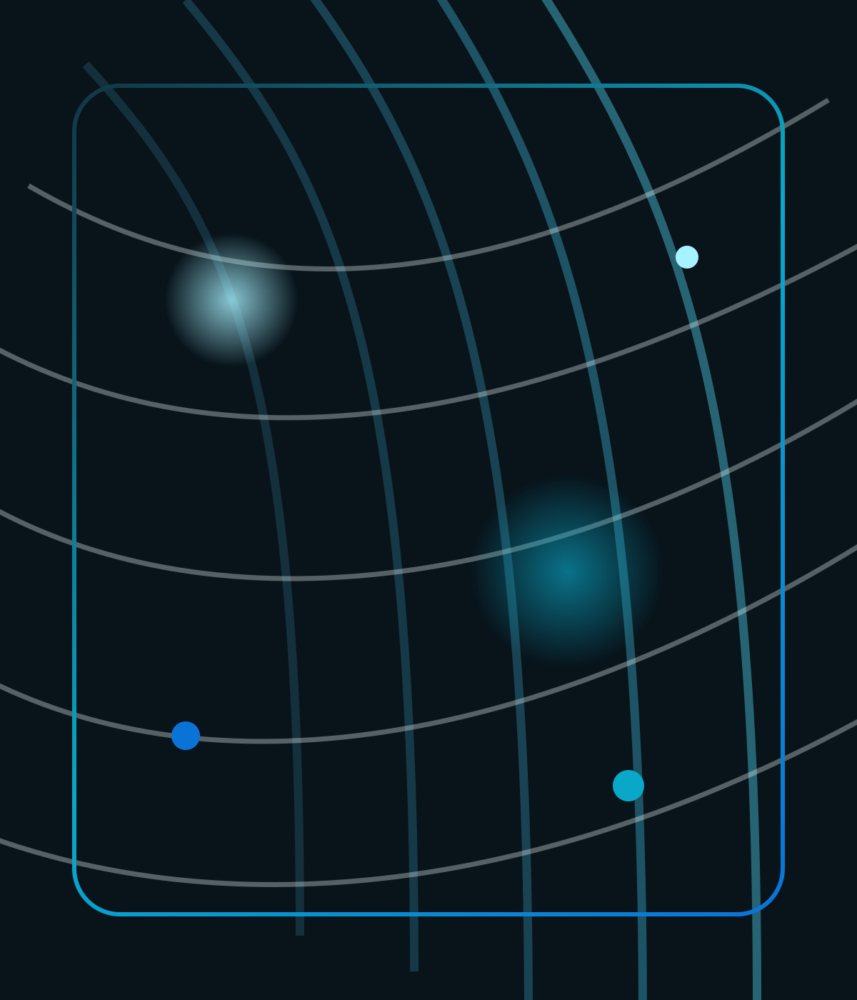

Textile Testing, Inspection & Quality Support
Precision in Every Fiber.
SHINE provides textile testing, inspection, chemical safety, and quality support services for brands, exporters, and sourcing teams that need clear direction and dependable execution.

Active Method
Fiber Integrity AnalysisService Scope
Chemical Safety / Performance / InspectionProject Output
Clear Service Plan
Textile Testing Lab India
Fabric Quality Assurance
Testing Services
Chemical Safety Testing
Textile Inspection & Auditing
Colorfastness & Durability
Textile Testing Services India
Fabric Quality Assurance
Testing Services
Chemical Safety Testing
Textile Inspection & Auditing
Colorfastness & Durability
Core Offering
Testing, inspection, and quality support services for textile teams that need clarity.
SHINE supports brands, exporters, and sourcing teams with practical testing coordination, inspection services, and technical guidance from inquiry to execution.
Softlines Testing
Fabric composition, tensile behavior, seam strength, dimensional stability, and core performance validation.
Chemical Safety
Support for restricted substance screening, material risk review, and chemical safety requirements.
Colorfastness & Durability
Laundering, rubbing, perspiration, crocking, and wear simulation for products built for the real world.
Flammability & Shrinkage
Safety and structural integrity testing for categories where product failure carries legal and commercial cost.
Inspection & Auditing
Pre-production, inline, and pre-shipment inspections that help teams monitor product quality and shipment readiness.
Expert Consultation
Method interpretation, corrective action guidance, and testing strategy support for complex quality programs.
Why SHINE
Practical textile service support designed for growing brands and sourcing teams.
SHINE is being built as a responsive textile service partner focused on clear communication, practical support, and dependable execution across testing and inspection needs.
Startup Focus
Service-first support
Built to help clients scope the right testing, inspection, and quality services from the start.
Consultation
Practical technical guidance
Direct support on service selection, test planning, and next-step recommendations.
Speed
Quick response time
Clear communication and timely coordination for sourcing, development, and quality teams.
Capability
Focused service scope
Support across textile performance checks, chemical safety requirements, and inspection programs.
Industries Served
Aligned to the textile categories where quality failures move fast and cost more.
Apparel
Performance validation, shade consistency, and supplier confidence for fashion and basics.
Home Furnishings
Durability, structural integrity, and wash performance for fabrics under repeated daily use.
Children’s Wear
Elevated chemical and physical safety expectations supported by disciplined test programs.
Specialty & Industrial Fabrics
Technical evaluation for functional, protective, and application-specific textile materials.
Sample Intake
Clear scope definition, method selection, and timeline planning from day one.
Method Execution
Planned testing and inspection workflows aligned to the product, requirement, and timeline.
Reporting & Guidance
Readable results, technical interpretation, and corrective direction where needed.
Knowledge Center
Publish guidance that helps sourcing and QA teams make better service decisions.
This section can be used for service updates, textile testing insights, and practical guidance for clients.
Compliance Update
How early chemical screening prevents export rework
Explain where material risk is best caught, and how brands can avoid shipment-stage surprises.
Request advisory supportTesting Insight
What a modern colorfastness program should include
Define the methods and acceptance logic that matter to performance-driven buyers.
Review service scopeInspection Strategy
Why inspections should connect directly to testing plans
Bring factory observations, service scope, and release decisions into one tighter QA loop.
Book an inspection